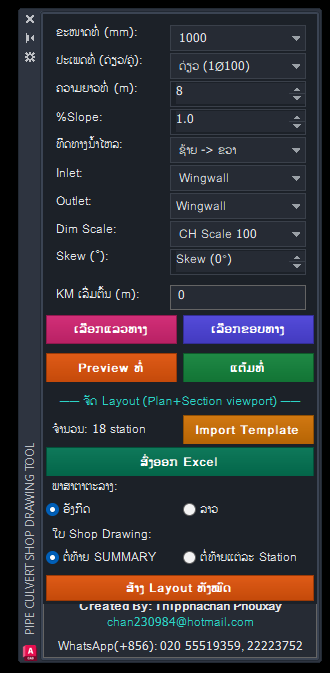
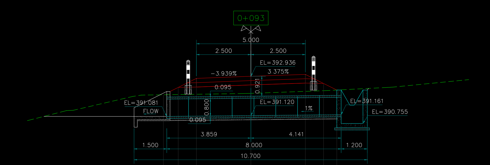
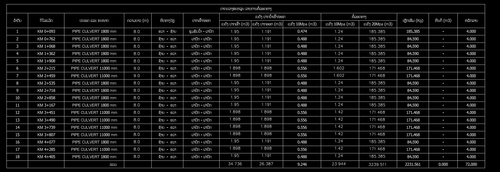

Pipe Culvert + Box Culvert
ແຕ້ມທໍ່ລອດລົງໃສ່ໜ້າຕັດຂວາງຖະໜົນອັດຕະໂນມັດ, ພ້ອມຕາຕະລາງປະລິມານ, Layout ແລະ Excel.
 ຮູບຕົວຢ່າງ
ຮູບຕົວຢ່າງຮູບໜ້າຈໍ
ຕົວຢ່າງການໃຊ້ງານຈິງໃນ AutoCAD.

ລໍຖ້າຮູບ
ລໍຖ້າຮູບ
ລໍຖ້າຮູບແບບເກົ່າ ທຽບກັບ ໃຊ້ Add-in
ວຽກດຽວກັນ, ໃຊ້ເວລາໜ້ອຍລົງ ແລະ ຜິດພາດໜ້ອຍລົງ.
ແຕ້ມດ້ວຍມື
- ວັດຄວາມຍາວທໍ່ຈາກຄັນທາງດ້ວຍມື ທີລະໜ້າຕັດ
- ຂຽນລະດັບ EL ເອງ, ຜິດງ່າຍ
- ນັບປະລິມານຄອນກຣີດ ແລະ ເຫຼັກໃນ Excel ຕ່າງຫາກ
- ສ້າງ Layout ແລະ Shop Drawing ທີລະແຜ່ນ
ໃຊ້ Pipe Culvert + Box Culvert
- ຄລິກເລືອກໜ້າຕັດ, ໂປຣແກຣມຫາຄັນທາງ ແລະ ຄວາມຍາວທໍ່ໃຫ້
- ລະດັບ EL= ອ່ານຈາກແຖວລະດັບແຜນການອັດຕະໂນມັດ
- ປະລິມານອອກເປັນຕາຕະລາງໃນ CAD ແລະ ສົ່ງອອກ Excel
- ກົດປຸ່ມດຽວ ສ້າງ Layout ທັງໝົດ ລວມ Shop Drawing
ຄຸນສົມບັດ
ສິ່ງທີ່ Add-in ນີ້ເຮັດໃຫ້ທ່ານ.
ແຕ້ມທໍ່ລົງໜ້າຕັດຂວາງ
ໃສ່ຄວາມຍາວ, %Slope ແລະ ທິດທາງນ້ຳ. ປາຍທໍ່ຈະຖືກວາງໃສ່ເນີນຄັນທາງໃຫ້ເອງ.
ບອກລະດັບ EL= ແລະ ຂະໜາດ
ອ່ານລະດັບຈາກແຖວ ລະດັບເສັ້ນແຜນການ ຂອງໜ້າຕັດ Civil 3D.
ທໍ່ດ່ຽວ, ທໍ່ຄູ່ ແລະ Skew
ຮອງຮັບ Skew 15° / 30° ສຳລັບທໍ່ Ø800 ແລະ Ø1000mm.
ຕາຕະລາງປະລິມານ
ຄອນກຣີດ, ຄອນກຣີດ 10 Mpa, ເຫຼັກ, ຫີນກໍ່ ແລະ ຫຼັກນຳທາງ ຕາມຖານຂໍ້ມູນທີ່ແກ້ໄຂໄດ້.
ສົ່ງອອກ Excel
ຕາຕະລາງ Excel ມີສູດ SUM ພ້ອມ, ຫົວຕາຕະລາງແບບລວມຊ່ອງຄືແບບມາດຕະຖານ.
Layout ແລະ Shop Drawing
ສ້າງແຜ່ນ Layout ທຸກ KM ແລະ ແຜ່ນ Shop Drawing ປີກກຳແພງໃຫ້ອັດຕະໂນມັດ.
ວາງທໍ່ເທິງ Plan & Profile
ສົ່ງລາຍການທໍ່ອອກເປັນໄຟລ໌, ແລ້ວວາງ Block ທໍ່ຕາມ Station ໃນແບບ Plan & Profile.
ຫຼັກນຳທາງ (Guide Post)
ແຕ້ມຫຼັກນຳທາງທັງໃນໜ້າຕັດ ແລະ ແຜນຜັງ ຕາມຈຳນວນໃນຖານຂໍ້ມູນ.
ທໍ່ລອດຫຼ່ຽມ (Box Culvert)
Palette ແຍກຕ່າງຫາກ, ຂະໜາດ 1–3 ຊ່ອງ ຕາມມາດຕະຖານ. ກຳລັງພັດທະນາເພີ່ມ.
ໜ້າຈໍພາສາລາວ
Palette ສີເຂັ້ມ ຄືກັບ AutoCAD, ຕົວໜັງສືລາວອ່ານງ່າຍ.
ວິທີໃຊ້
ຈາກເປີດ ຈົນໄດ້ຜົນ.
ເປີດ Palette
ພິມ PIPEPANEL ຫຼື ກົດປຸ່ມໃນແຖບ CH Tool.
ເລືອກທໍ່
ເລືອກຂະໜາດ, ທໍ່ດ່ຽວ/ຄູ່, Skew ແລະ KM.
ແຕ້ມ
ຄລິກໜ້າຕັດຂວາງ, ທໍ່ ແລະ EL ຂຶ້ນທັນທີ.
ອອກແບບ
ສ້າງ Layout ທັງໝົດ ແລະ ສົ່ງອອກ Excel.
ລາຍລະອຽດ
ຂໍ້ມູນທາງເຕັກນິກ ແລະ ໂປຣແກຣມທີ່ໃຊ້ໄດ້.
ໃຊ້ໄດ້ກັບ
ຄຳຖາມທີ່ພົບເລື້ອຍ
ກົດຄຳຖາມເພື່ອເບິ່ງຄຳຕອບ.
ຕ້ອງໃຊ້ອິນເຕີເນັດຕະຫຼອດບໍ?
ບໍ່ຕ້ອງ. ຕໍ່ອິນເຕີເນັດພຽງຄັ້ງດຽວຕອນເປີດໃຊ້ License, ຫຼັງຈາກນັ້ນໃຊ້ອອບລາຍໄດ້.
1 License ໃຊ້ໄດ້ຈັກເຄື່ອງ?
1 Key ໃຊ້ໄດ້ 1 ເຄື່ອງ.
ປ່ຽນຄອມໃໝ່ເຮັດແນວໃດ?
ທັກ WhatsApp ແຈ້ງ, ພວກເຮົາຈະຍົກເລີກເຄື່ອງເກົ່າ ແລະ ອອກ Key ໃໝ່ໃຫ້.
ຂະໜາດທໍ່ ແລະ ປະລິມານແກ້ໄຂໄດ້ບໍ?
ໄດ້. ປະລິມານເກັບໃນຖານຂໍ້ມູນ, ແກ້ໄດ້ຈາກໜ້າຈໍ ແກ້ຄ່າບໍລິມາດ.
ຕິດຕັ້ງຍາກບໍ?
ບໍ່ຍາກ. ໃຊ້ໄຟລ໌ Setup (MSI) ຄລິກດຽວ, ແລ້ວເປີດ AutoCAD ໃໝ່.
ມີຄົນຊ່ວຍເຫຼືອບໍ ຖ້າໃຊ້ບໍ່ເປັນ?
ມີ. ທັກ WhatsApp ສົ່ງຮູບໜ້າຈໍມາ, ຜູ້ພັດທະນາຕອບເອງ.
ສອບຖາມ ແລະ ສັ່ງຊື້
ທິບພະຈັນ ພູໄຊ · ຜູ້ພັດທະນາ